All 3 NeetCode 150 tries problems, one picture each
Open a problem to see its picture: the question, the main idea (the obvious way vs the smart way), a walkthrough, the code, and why it works.
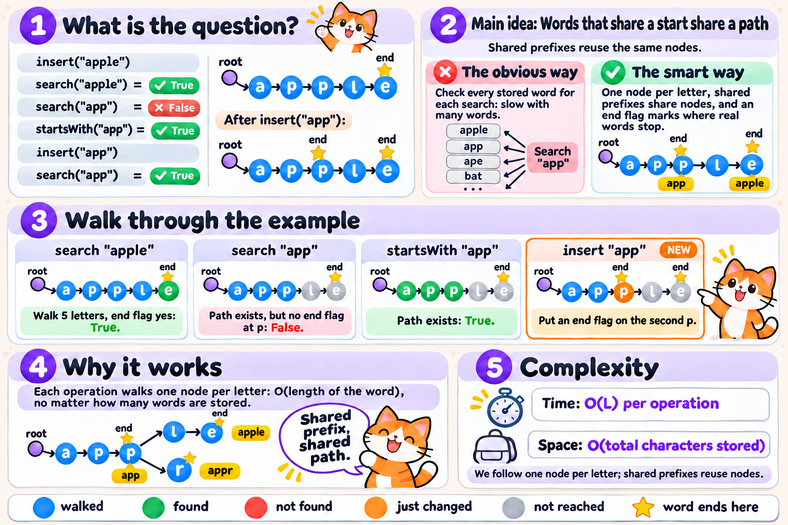
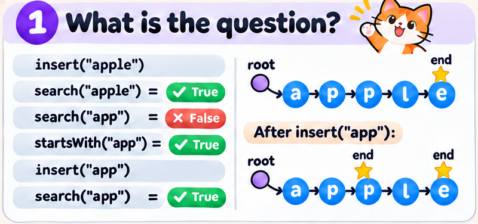
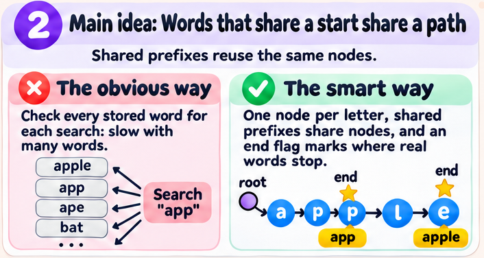
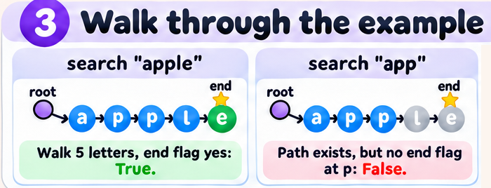
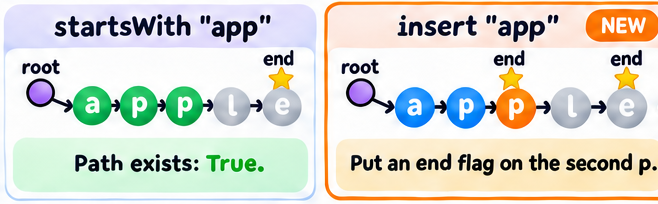
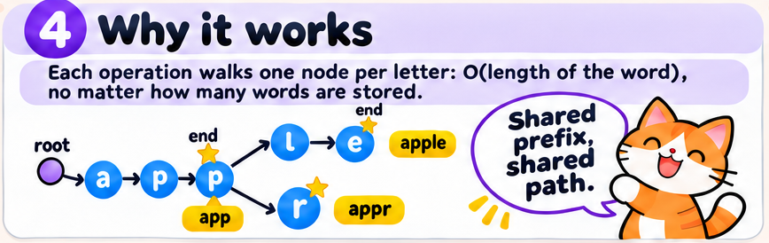
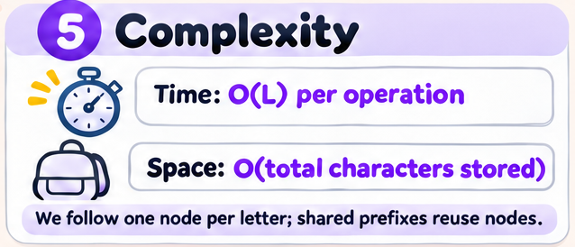
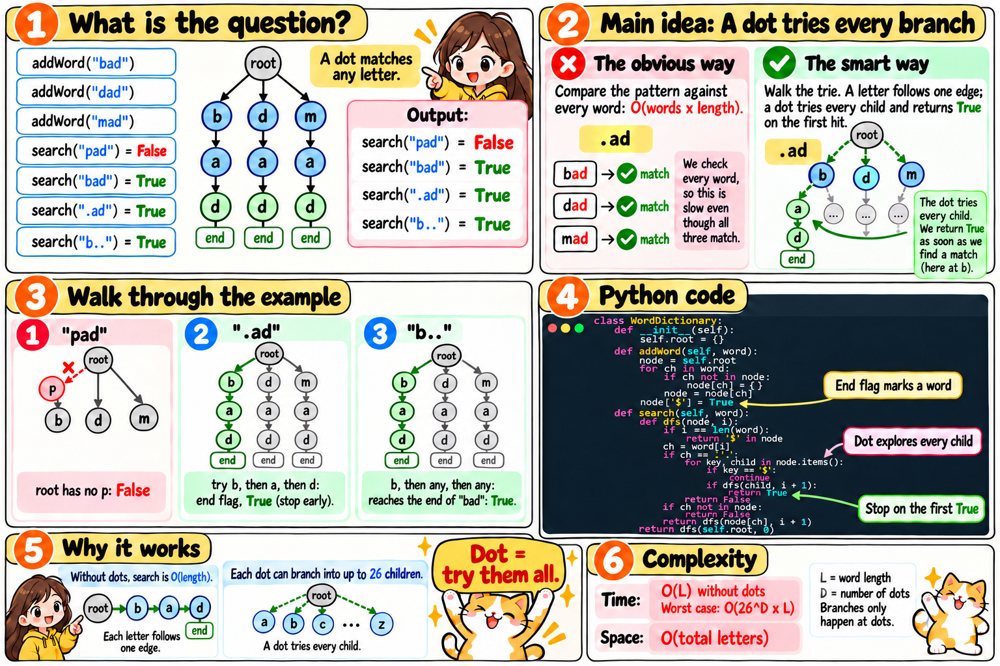
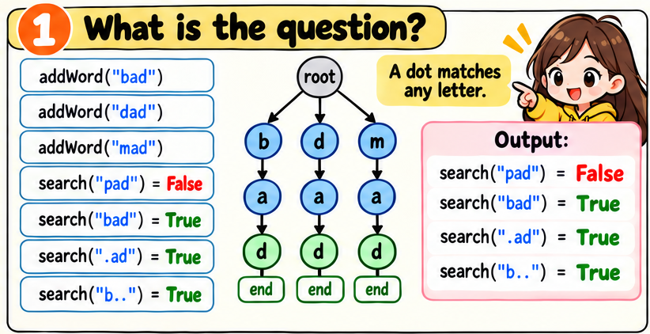
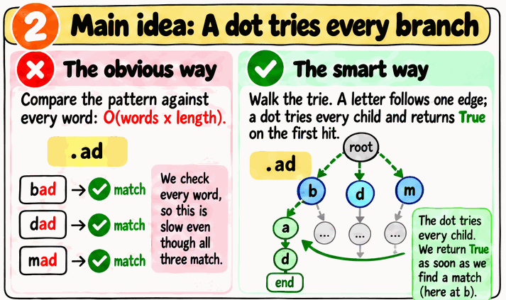
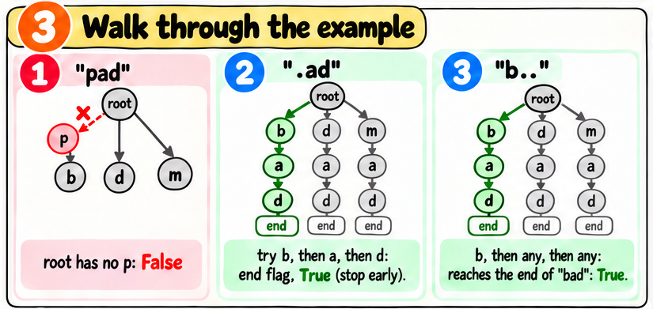
The stored words are "cat", "car" and "cot", and I search for "c.t".
A normal letter follows one arrow.The dot follows every arrow.Dropped, because "r" is not "t".
current of every node that matches the word so far. It starts with just the root.current has the '$' marker, a full word ends there, so the answer is True.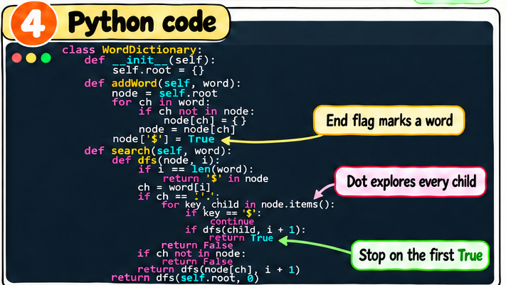
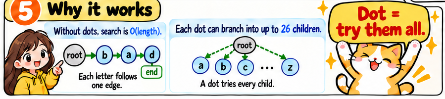
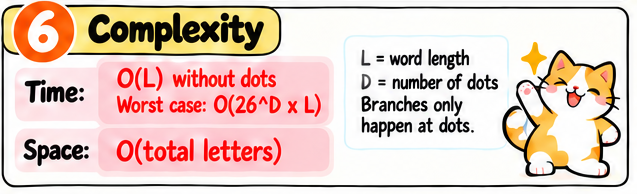
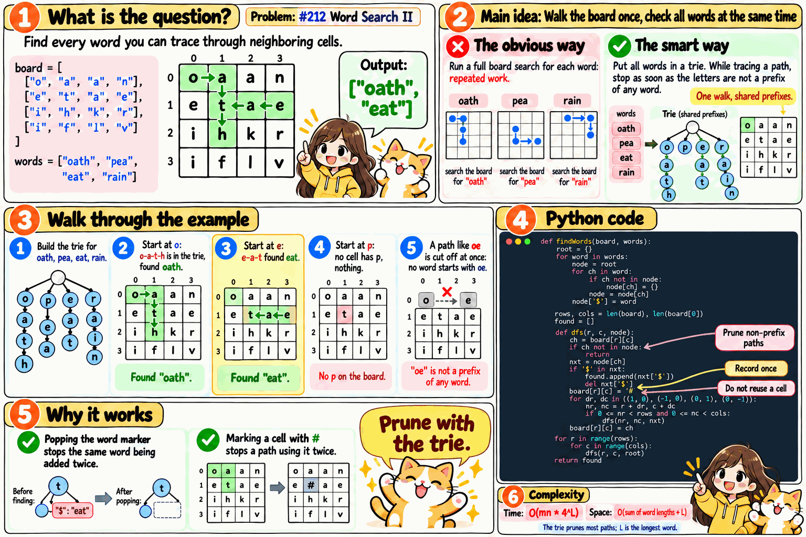
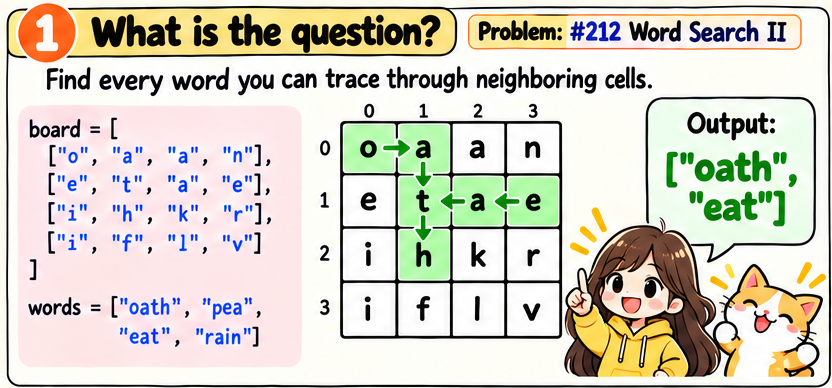
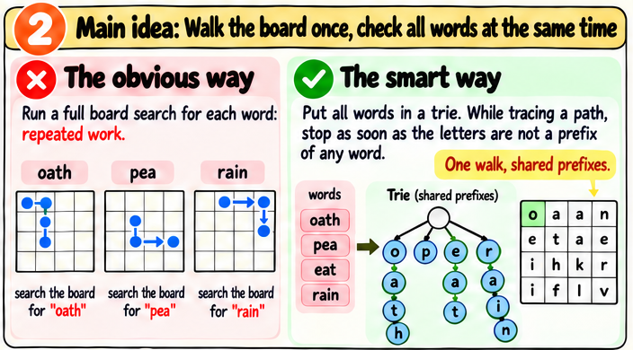
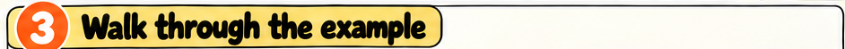
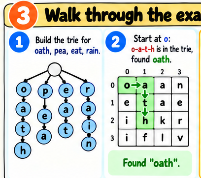
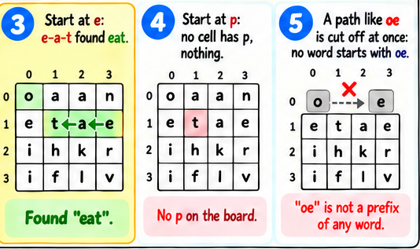
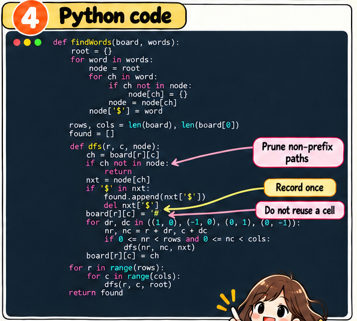
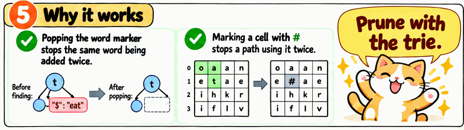
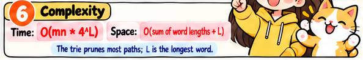